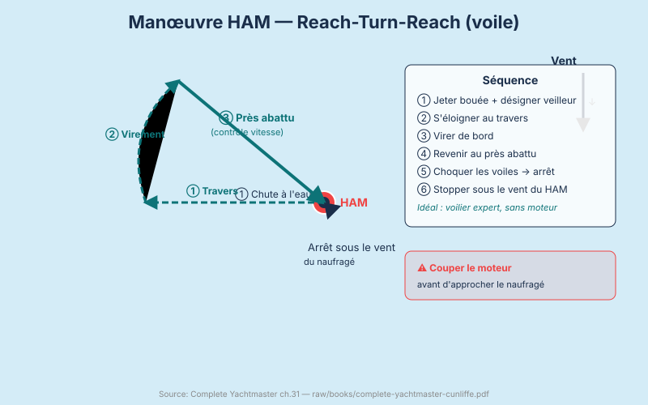
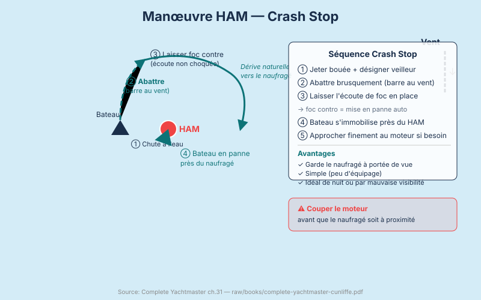

Urgences à Bord — HAM, Incendie, Voie d'Eau
Lundi 9h00. Au large de Yassıca Adaları. Exercice HAM.
"Homme à la mer !" crie William en jetant une bouteille par-dessus bord.
Temps de réaction de l'équipage : 4 secondes avant que quelqu'un commence à réagir. Christelle court chercher la bouée-fer à cheval. Emmanuel cherche les yeux la bouteille — déjà à 20 mètres derrière le bateau. Rebecca est figée, les yeux écarquillés.
"Arrêtez." William reprend. "La bouée-fer à cheval est là. Rebecca, tu désignes la bouteille des yeux et tu ne la quittes plus. Emmanuel, tu barres. Christelle, tu notes le MOB GPS. Maintenant on recommence — plus vite." Rebecca, les yeux rivés sur la bouteille : "OK là je comprends pourquoi c'est sérieux."
Deuxième essai : 1.5 secondes. Beaucoup mieux.
"En mer réelle, avec de la houle, c'est encore plus difficile. Votre cerveau panique. D'où les procédures — elles court-circuitent la panique."
Homme à la mer (HAM / MOB)
L'homme à la mer (HAM) est l'urgence la plus fréquente en plaisance et l'une des plus mortelles. Les statistiques sont claires : dans la majorité des accidents, la victime était un marin expérimenté, tombé pendant une manœuvre banale. La vigilance permanente, l'utilisation du harnais la nuit et par mer forte, et la connaissance des procédures de récupération sont les trois défenses.
Les actions immédiates (dans les 5 premières secondes) :
- Crier "Homme à la mer !"
- Jeter la bouée-fer à cheval et la bouée-balise (danbuoy) avec sa lumière
- Désigner un équipier dont la seule mission est de garder le contact visuel — ne quitter des yeux sous aucun prétexte
- MOB GPS — appuyer sur le bouton MOB de votre GPS/chartploteur
- Mettre le moteur au ralenti — ne jamais engager en marche arrière si la personne est proche de l'hélice


Voir concepts/homme-a-la-mer-manoeuvres, concepts/pratique-homme-a-la-mer.
Méthode 1 : Reach-Turn-Reach (à la voile)
Conditions optimales : voilier bien manœuvrant avec équipage compétent, toutes conditions, sans moteur fiable.
Procédure :
- Immédiatement, lofer sur le travers (beam reach) — le bateau s'éloigne de la victime perpendiculairement au vent. Cette distance est nécessaire pour avoir de la place pour le demi-tour. Restez sur le travers 5 à 8 longueurs de bateau.
- Virer de bord (tack) — amener le bateau sur l'autre bord.
- Revenez en près abattu (close reach) — environ 60° du vent. C'est l'allure clé : vous pouvez contrôler précisément votre vitesse en choquant progressivement les voiles. Ni trop vite (impossible à stopper), ni trop lent (pas de gouverne).
- Choquez les voiles progressivement à l'approche pour perdre de l'erre. Les voiles faseyent, la vitesse tombe.
- Stoppez le bateau sous le vent de la victime — la victime est à quelques mètres sous votre vent, vous pouvez lui lancer une ligne ou descendre l'échelle de bain.
Pourquoi le près abattu : Au près serré, trop difficile à manier lentement. Au vent de travers ou au largue, trop rapide et on ne peut pas "freiner" avec les voiles. Le près abattu est le seul angle qui permet un contrôle précis de l'arrêt.
Timing : L'ensemble de la manœuvre devrait prendre 3 à 5 minutes sur un voilier de taille standard. Chaque seconde de plus augmente la distance de dérive de la victime.
Méthode 2 : Crash Stop
Conditions optimales : nuit, visibilité réduite, victime très proche, équipage court, mer agitée rendant la méthode 1 difficile.
Procédure :
- Barre franchement au vent (barre poussée à fond sous le vent) — le bateau lofe violemment et commence à tourner vers le vent.
- Laisser le foc en place — en faseyant, le foc maintenu dans sa position devient backed (il faseye du mauvais côté) et pousse l'avant du bateau sous le vent, l'arrêtant en position de cape.
- Le bateau se met en panne (heave-to) : immobile ou dérivant très lentement.
- La victime est normalement à quelques longueurs de bateau, côté sous-le-vent.
Avantage : La manœuvre prend 15 à 30 secondes. Le bateau reste proche de la victime.
Limitation : Impossible de contrôler précisément le point d'arrêt. Ne fonctionne bien qu'à la voile (sous moteur seul, cette manœuvre est beaucoup moins efficace).
Méthode 3 : Approche moteur
Conditions optimales : mer forte, vent de travers/vent arrière, visibilité faible, équipage épuisé, voilier sous moteur.
Procédure :
- Crash stop immédiat ou virement pour interrompre le mouvement initial.
- Affaler ou enrouler le génois — ne jamais démarrer le moteur avec un cordage à portée de l'hélice.
- Vérification rigoureuse : regarder derrière le tableau, sous la poupe — aucun cordage dans l'eau.
- Démarrer le moteur.
- Approcher à faible vitesse, par l'avant du vent : la victime est sous le vent du bateau. Le bateau est plus stable et le contact plus facile.
- Couper le moteur 3 à 5 mètres avant la victime — l'hélice ne tourne plus, pas de risque de lacération. Utiliser l'erre restante pour finir l'approche.
Règle absolue : Ne jamais engager le moteur en marche arrière avec une personne à proximité dans l'eau. La succion et la rotation de l'hélice sont mortelles.
Remonter le naufragé
C'est souvent la partie la plus difficile. Même une personne de 70 kg, trempée et épuisée, peut peser "300 kg" au sens pratique une fois à l'eau.
Si la personne est valide et consciente :
- Descendre l'échelle de bain et synchroniser l'aide avec le roulis du bateau.
- Passer un brin de l'écoute de génois en boucle sous le pied de la personne : en tirant au winch par petits coups, elle peut grimper marche par marche.
Si la personne est inconsciente, blessée, ou hypotherme :
- Elle ne peut pas grimper une échelle. La remonter verticalement est également dangereux si elle est hypotherme : le choc thermique lors du passage en position verticale peut provoquer un arrêt cardiaque (phénomène de "rescue collapse").
- Solution : hisser horizontalement avec un palan. Attacher une drisse à un point d'attache autour des épaules, guider depuis l'eau, hisser à la bôme avec un winch.
- Parbuckling sling (élingue de parbuckle) : un filet triangulaire fixé d'un côté au rail et de l'autre à la drisse. En tirant sur la drisse, la personne roule horizontalement sur le pont — méthode recommandée pour les victimes inconscientes.
Incendie à bord
L'incendie à bord est particulièrement dangereux car l'évacuation est limitée : vous êtes en mer. La réponse doit être immédiate et méthodique.
Le triangle du feu : combustible (carburant, gaz, bois, tissu) + comburant (oxygène) + énergie (chaleur, étincelle). Supprimer l'un des trois éteint le feu.
Les trois classes de feux à bord :
- Classe A (feux secs — bois, tissu) : extincteur eau ou poudre ABC
- Classe B (feux liquides — carburant, huile) : CO2, poudre ABC, mousse
- Classe C (électrique) : CO2 uniquement (pas d'eau ni de mousse)
Types d'extincteurs :
- CO2 : dissout l'oxygène sans résidu. Idéal pour l'électronique et la salle des machines. Efficace en espace confiné. Attention à l'asphyxie dans un carré fermé.
- Poudre ABC : polyvalent, efficace. Laisse un résidu qui abîme tout. Réservé aux urgences graves quand rien d'autre ne fonctionne.
- Extincteur fixe salle des machines : certains bateaux ont un système à déclenchement automatique ou manuel à distance. Fermer l'aération avant de déclencher.
Procédure incendie à bord :
- Couper le gaz et l'alimentation carburant immédiatement — supprimer le combustible.
- Fermer les aérations du compartiment en feu — limiter l'oxygène.
- Si l'incendie est petit (moins d'un seau d'eau) : utiliser l'extincteur approprié.
- Si l'incendie dure plus de 30 secondes malgré les extincteurs : abandonner la lutte, MAYDAY immédiat sur VHF 16, préparer l'abandon du navire.
- Rassembler l'équipage côté sous le vent, loin des flammes, avec les gilets.
Prévention : Vérifier les connexions électriques annuellement. Ne jamais transférer de carburant près d'une flamme. Le gaz (GPL) est plus lourd que l'air et s'accumule dans la cale — ventiler avant de démarrer le moteur si l'odeur de gaz est présente.
Voir concepts/incendie-bord.
Voie d'eau
Une voie d'eau est toute entrée d'eau non voulue à bord. Leur gravité va de l'infiltration mineure à l'envahissement catastrophique.
Détecter une voie d'eau : Alarme bilge, pompe de cale qui cycle fréquemment, placards ou coffres humides en fond de cale, bateau assis plus bas que d'habitude.
Localiser la source : Les zones critiques à inspecter en priorité :
- Vannes de coque (sea cocks) : robinets sous la ligne de flottaison (toilettes, cockpit, moteur)
- Presse-étoupe (stern gland) : le joint autour de l'arbre d'hélice, qui doit goutter légèrement mais pas couler
- Boulons de quille : sur voilier lesté, un choc peut les desserrer
- Tableau arrière et gouvernail : les joints peuvent se dégrader
Boucher une voie d'eau :
- Bouchon de bois conique (wooden plug) : tenir un jeu de bouchons taillés de différents diamètres contre chaque vanne de coque — enfoncer en cas de rupture
- Chiffons compactés tassés dans une ouverture, maintenus par une planche
- Résine époxy sous-marine pour les petites fissures
Pomper : La pompe manuelle peut évacuer 20 à 40 litres par minute. Un trou de 50 mm laisse entrer 600 litres par minute — vous ne pouvez pas pomper plus vite. Si l'ingérance dépasse la capacité de pompage : MAYDAY immédiat, préparer l'abandon.
Voir concepts/voie-eau, concepts/securite-controle-avaries.
Procédure :
- Localiser la source
- Taper au coin (bouchon de fortune en bois, chiffons compactés)
- Pomper la cale
- Si ingérable : MAYDAY immédiat, préparer l'abandon
Échouage
L'échouage (running aground) est fréquent et souvent sans conséquence si on réagit correctement.
Réaction immédiate : Arrêter la propulsion. Évaluer la situation sans panique. Sonder autour du bateau pour comprendre la forme du banc.
Tenter de se dégager :
- Ne pas forcer au moteur en marche avant si le bateau est sur le sable ou la vase — vous risquez d'approfondir le cratère sous la quille.
- Marche arrière douce peut fonctionner si l'échouage est récent et le fond mou.
- Faire gîter le bateau réduit le tirant d'eau : demander à tout l'équipage de se tenir à la même hauteur du côté opposé à la mer, ou utiliser la bôme et le poids des voiles.
- Mouiller une ancre kedge dans la direction des eaux profondes, puis tirer dessus au winch — technique classique pour se déhaler.
- Attendre la marée montante si vous êtes en Atlantique et que l'échouage survient à marée basse (en Méditerranée, cette option n'existe presque pas — 20 cm de différence).
Si vous ne pouvez pas vous dégager seul : Appeler le CROSS (195 en France) ou le VHF 16 pour un remorqueur. Ne pas attendre que la situation empire — le vent et la mer peuvent "enfoncer" le bateau plus profondément.
Gros temps — procédures et tactiques
La mer peut toujours vous surprendre. Voici les tactiques de survie par gros temps :
La cape serrée (heaving-to) : La manœuvre de pause. Barer la foc contre le vent (backed jib), choquer la grand-voile, mettre la barre sous le vent. Le bateau se stabilise à 50–60° du vent, dérivant lentement. Le cockpit est calme, la mer est moins dure. Technique de pause pour manger, réparer, attendre.
Courir devant la tempête (running before storm) : Mettre le vent arrière avec un minimum de voile (tempête à l'artimon ou étai seul), laisser traîner un filin en boucle pour freiner la vitesse et réduire les risques de surf et d'empannage sauvage.
La touée (sea anchor) : Un parachute sous-marin déployé sur l'avant du bateau, maintenant le nez dans les vagues. Technique sécurisée pour les conditions extrêmes — requiert un équipement spécifique.
L'abattée (lying ahull) : Toutes voiles amenées, barre libre. Le bateau se met en travers des vagues. Acceptable dans les houles longues, dangereux dans les vagues courtes et creuses (risque de dessalage).
La règle fondamentale par gros temps : le bateau est plus robuste que vous ne le pensez. Réduire la voilure tôt, ne pas paniquer, et choisir une tactique active plutôt que de subir.
Voir concepts/gros-temps-tactique.
L'abandon de navire est le dernier recours. Un bateau qui flotte est toujours plus visible et plus sûr qu'un radeau de survie. N'abandonnez le bateau que si vous êtes obligés de monter dans le radeau — jamais préventivement si le bateau flotte encore.
Exercice HAM off Yassıca Adaları :
Vitesse au moment de l'exercice : 5 nœuds. En 4 secondes de délai, la "victime" (bouteille) s'est éloignée de ~10 mètres. À 5 nœuds réels (8,5 km/h), un naufragé peut être à 50 mètres en moins d'une minute.
Dans le golfe de Göcek, la visibilité est bonne, la houle est faible — conditions favorables. En Atlantique Nord avec une houle de 3 mètres, ce sera beaucoup plus difficile.
Question 1 : Christelle trébuche et tombe par-dessus bord au large de Kızılada. Quelle est la PREMIÈRE action à effectuer dans les 3 premières secondes ?
- A) Sauter à l'eau immédiatement pour la rejoindre
- B) Appeler "HOMME À LA MER !" et lancer la bouée fer à cheval en gardant le contact visuel
- C) Appeler le CROSS sur VHF 16 pour demander une aide immédiate
Voir la réponse
Réponse : B — Les premières secondes : (1) crier "Homme à la mer !" pour alerter l'équipage, (2) jeter la bouée fer à cheval ou une bouée couronne, (3) désigner quelqu'un pour garder le contact visuel sans le perdre un instant. Ne JAMAIS sauter à l'eau (A) — vous devenez une deuxième victime et l'équipage doit récupérer deux personnes au lieu d'une. L'appel radio (C) vient après la récupération ou si la situation dépasse vos capacités.Question 2 : Un incendie est détecté dans le compartiment moteur du Deniz Rüzgarı. Dans quel ordre agissez-vous ?
- A) 1. Extincteur, 2. Couper le carburant, 3. Évacuer le cockpit
- B) 1. Couper moteur et alimentation carburant, 2. Fermer les orifices d'air, 3. Extincteur ou CO2 fixe
- C) 1. Appeler le CROSS, 2. Couper le carburant, 3. Extincteur
Voir la réponse
Réponse : B — Séquence incendie en salle des machines : (1) couper le moteur et l'alimentation en carburant (priver le feu de combustible), (2) fermer les trappes et ouïes d'aération (priver le feu d'oxygène), (3) utiliser l'extincteur ou le système CO2 fixe SANS ouvrir le compartiment si possible (rouvrir alimente le feu). L'appel radio (C) se fait en parallèle mais n'est pas la première priorité.Question 3 : Le Deniz Rüzgarı a une voie d'eau dans l'avant de la coque. Mehmet indique une pompe de cale qui débite 30 litres par minute. L'eau entre à 50 litres par minute. Quelle est la bonne décision ?
- A) Pomper à fond — la pompe peut ralentir la progression
- B) Boucher la voie d'eau avec tous les moyens disponibles (coussins, étoupe, coins) PENDANT que quelqu'un pompe
- C) Abandonner immédiatement le bateau — la pompe ne peut pas gérer l'entrée d'eau
Voir la réponse
Réponse : B — La pompe de cale est utile mais ici insuffisante (déficit de 20 L/min). La priorité est de réduire l'entrée d'eau par colmatage d'urgence (coussins, serviettes, coin de bois, matelas) pour que la pompe puisse faire face. L'abandon (C) n'est envisageable qu'en dernier recours, quand le bateau ne peut plus être sauvé.Question 4 : Quelqu'un à bord souffre de symptômes graves : douleur thoracique irradiant dans le bras gauche, transpiration, pâleur. Quelle est la procédure d'urgence médicale à distance ?
- A) Appeler le CROSS sur VHF 16 et demander une coordination SMUR hélitreuillage
- B) Administrer de l'aspirine et allonger la personne — attendre l'arrivée au port
- C) Appeler le 15 (SAMU) par téléphone mobile — le VHF n'est pas adapté aux urgences médicales
Voir la réponse
Réponse : A — En mer, l'urgence médicale se gère via le CROSS sur VHF 16 (canal de détresse) : le CROSS coordonne le médecin régulateur et les secours (hélicoptère, vedette SNSM). En haute mer, le service TMAS (Télémedical Assistance Service) offre une consultation médicale à distance. Le SAMU (C) peut être appelé si la couverture mobile est disponible, mais le VHF est le canal principal en mer.La nuit à Kızılada est étrange — un voile de brume arrive vers 21h, réduisant la visibilité à 400 mètres. Les feux des autres bateaux sont flous. La Coupe du Monde est en quart de finale sur le téléphone d'Emmanuel — mais il éteint l'écran et préfère écouter Mehmet qui explique calmement les règles de navigation par visibilité réduite.
Session 5.4 — Visibilité Réduite et Navigation Nocturne.